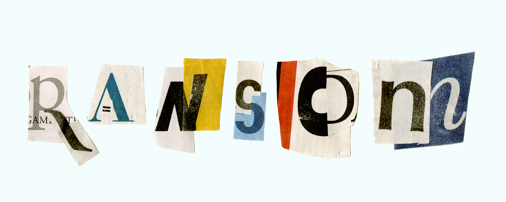

{kind=link}

View alphabet
In teams of two, we were assigned a material and method to use in creating an alphabet that explored how letterforms are constructed and perceived, and made a connection to the original material the letters were constructed from. We were given newspaper and scissors, and after exploring several ideas—cutting letterforms from blocks of body copy, using an unfold-to-reveal mechanism reminiscent of folding and unfolding a newspaper—chose to create letters that were combinations of other letterforms and shapes.
Each letter is made out of two elements from different characters: the Q is made with an sans-serif 'o' and didone 'R', the 'Y' made with a blackletter 'h' from a newspaper masthead and a condensed sans-serif 'G'. We named our constructed typeface "Ransom", since the style is very reminiscent of stereotypical ransom-note writing. However, the colors and combinations of different typographic styles within each character make it a more cheerful and inventive use of cut-and-paste news type.
- Year 2013
- For Typography studio class
- Partner Julia Larrabee